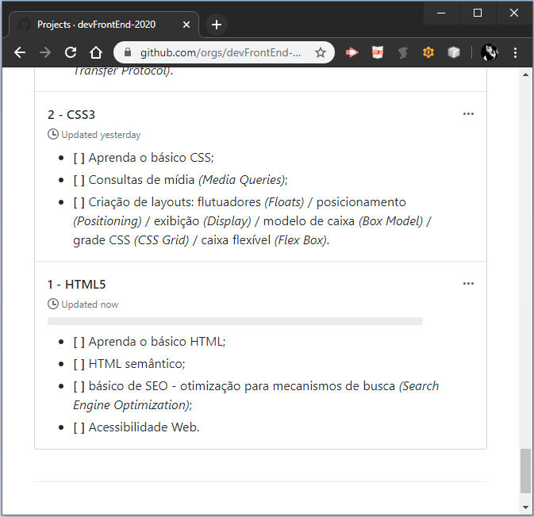
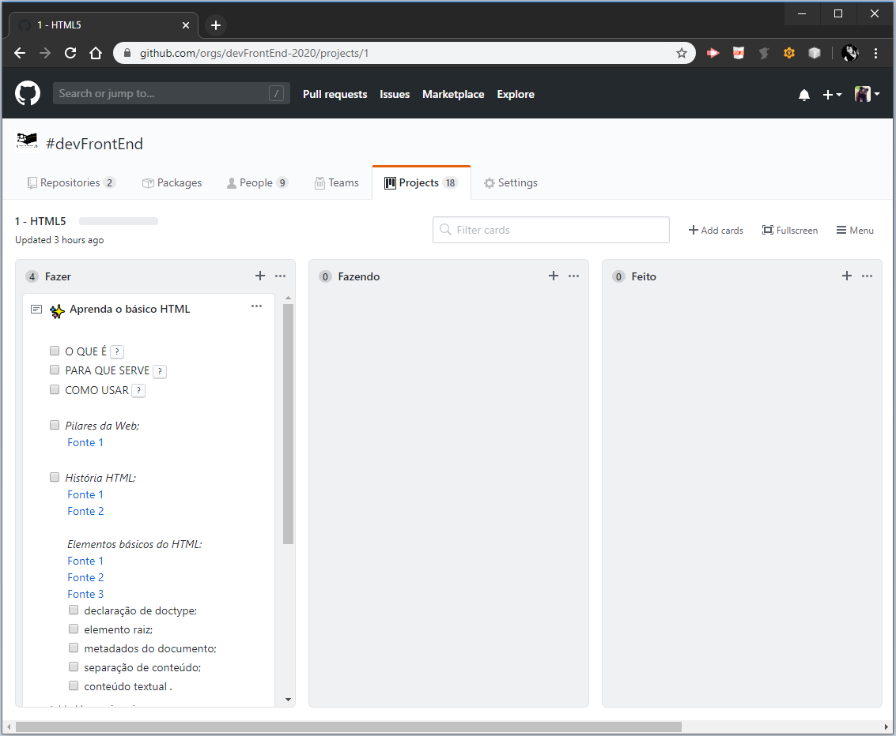

Passo 1
Entre na Organização do Grupo de Estudos #devFrontEnd e vá até os projetos escolha um dos projetos para iniciar sua pesquisa, de preferência na ordem crescente dos números na frente de cada nome do projeto.
Veja que no exemplo abaixo do projeto HTML5 há o número "1" antes da palavra "HTML5":
Passo 2
Dentro de um dos projetos irá visualizar um formato de kanban com três colunas:
Como por exemplo dentro do projeto HTML5:
Passo 3
Escolha um dos itens no Menu do projeto em que se encontra e crie um card na coluna Fazer com o item desejado.
Quando decidir procurar o conteúdo a respeito do item que acabou de criar, arraste o card criado deste item para a coluna Fazendo e não poupe suas fontes, procure até saciar todas as suas dúvidas.
Caso ainda fique confuso durante o estudo, pode interagir com a galera do grupo pelo Whatsapp ou no Hangouts.
Após ter coletado tudo que foi necessário e realizado seu resumo em forma de imagens, PDFs, vídeos e etc, arraste o card para a coluna Feito e seja o próximo do grupo a passar o conhecimento em nossas videoconferências pelo Hangouts. E/Ou se preferir, pode ir divulgando o conhecimento pelo grupo do whatsapp.
O conteúdo após esta etapa de pesquisa é refinado para se encaixar dentro da organização em que esta Page Hub foi criada.
Passo ilustrativo
Não, vc não está vendo duplicado abaixo realmente é outro passo ilustrado, rs. Neste saberá como pegar pra valer nos estudos!

Agora já sabe como participar em relação aos conteúdos de estudo e como contribuir para o crescimento do conhecimento geral do grupo. Mas está querendo checar como começar pq veio aqui antes de executar o passo a passo desse início?
Então vá num clique para o começando e volta no outro clique voando. rs
Mas enfim, comece logo e mãos nas teclas e clique nos dedos, pq quem navega na web não dorme cedo kkk.
Não está afim de ir para o começo pq já fez aquela parada lá? Muito bem!
Mas quer olhar o nosso roadmap nos cards para dar uma espiadinha se alguém já estudou algo?
Dê um clique nessa palavra: página inicial ou clique na imagem da logo do grupo de estudos ali no canto superior à direita!
E atenção, todo o contéudo já estudado pode ser conferido clicando nos cards da página inicial no Título Conteúdo. Com os cards sinalizados nas cores verde para conteúdo já absorvido,
ou vermelho que ainda não foram estudados. Exemplos:
1
Foi estudado. E terá um link nele para visualizar o conteúdo!
2
Não foi estudado. E não terá link e conteúdo disponível!
Neste grupo pode entrar participantes novos em qualquer data e pode criar conteúdos repetidos de acordo com seu ponto de vista. A única pessoa comprometida a sempre estar de acordo com o cronograma criado é a Administradora do grupo, euzinha (Marina Micas Jardim).
Todas as terças serão videoconferências de acordo com o cronograma de estudos.
E nas quintas serão videoconferências de revisão de conteúdos já vistos em qualquer fase do estudo, para poder contemplar os participantes novos que forem entrando.